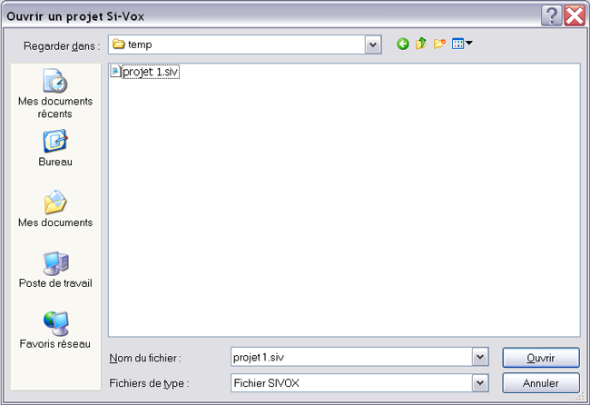

Pour ouvrir un projet SIVOX déjà existant, il faut cliquer sur Fichier > Ouvrir Projet ou simplement cliquer sur le boutton :
Le logicel vous demande alors le projet SIVOX que vous voulez ouvrir (extension .SIV)

Si vous choissisez d'annuler l'action, rien ne sera ouvert. Si vous cliquez sur Ouvrir le logiciel ouvrira le projet sélectionné.